|
| Home |
| FAQ |
| Quick Start Guide |
| Message Boards |
| Donate |
| File a bug |
ScratchTrack 0.5
Quick Start
Glossary - If you read anything, read this. Seriously. You'll be done in like five minutes.| Term |
Definition |
| Envelope (or bucket) budgeting workflow |
Envelopes are created for different expense categories and funds
are added to those envelopes. Expenses are paid from envelopes as they happen.
When an envelope is empty, spending from that envelope stops until
more funds are added. Key concept: You don't spend money you don't have. |
| Envelopes |
Envelopes
are used to plan, track, and manage spending. You'll create envelopes
for different types of expenses (rent, groceries, dining
out, utilities, etcetera). You'll assign money to the envelopes, and
then pay expenses from them. In ScratchTrack, envelopes
are figurative and provide an organized view of the
funds in accounts. Envelopes have a name, a monthly budget, and a
balance. Key concept: Envelopes are views of the money in accounts. Assigning funds to an envelope doesn't move money. It just marks it for a specific purpose. |
| Accounts |
In
ScratchTrack, unspent funds are always in an account. Funds can be
assigned to envelopes, but envelopes are just a view of
the money in the accounts. Key concept: Money stays in accounts until spent. |
| In-budget account |
In-budget
accounts are accounts whose balance can be assigned to envelopes. Accounts that you typically spend from (i.e. checking
accounts) are usually in-budget. You can pay for things from off-budget
accounts, but off-budget dollars aren't used to fund envelopes. |
| Budgetable Dollars |
Budgetable
(or assignable) dollars is the sum of in-budget account balances
minus funds already assigned to envelopes. When money is assigned
to
an envelope, the money stays in the account and the account's balance
doesn't change, but budgetable dollars decreases by that amount. |
| Folder |
Folders
are used to organize envelopes. A good strategy is to create
folders for each monthly income event. For instance, if you're paid
twice a month, create folders titled 'paycheck one' and 'paycheck
two'. You can set a spending limit on folders. In the paycheck
workflow, the spending limit should be set to the typical paycheck
amount. As you add envelopes to the folder, you can track how close
you are to the limit. This helps avoid over budgeting and over spending. |
| Credit Card Account |
ScratchTrack
supports "buy now, pay later" credit card spending.
This is done through credit card accounts. When a credit card account
is created, a matching "pay credit card" envelope is
automatically created. This is a special category and money isn't
directly assigned to it. Instead, when an expense is paid with a credit
card, ScratchTrack un-assigns funds from the original envelope
and assigns it to the "pay credit card" envelope. When the credit card
is paid, it's paid from the "pay credit card" envelope. |
ScratchTrack User Interface
ScratchTrack's single window interface has four main areas
- The accounts list displays accounts and balances
- The budget info window displays budget status
- The folders and envelopes tree displays folders and categories
- The transaction list displays transactions

Workflow walk-throughs
| Setting up accounts First we'll add acounts. In this screenshot we're adding a checking account. We want to assign money in this account to envelopes so we'll leave "In-budget account" cheked. 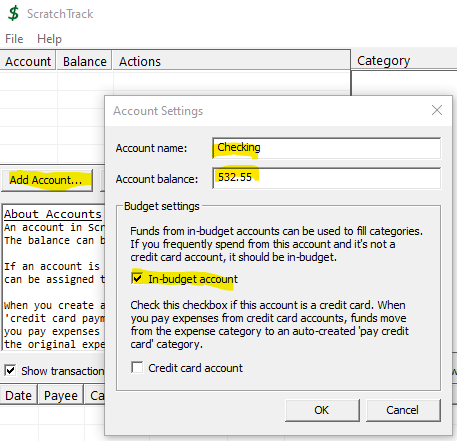 Next we'll add a savings account. We don't want to spend money from this account unless we have to so we'll uncheck "In-budget account". We can still pay bills from this account as needed. 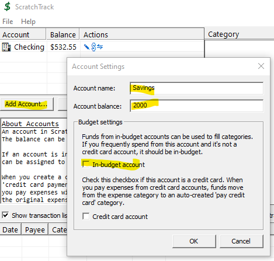 Lastly we'll add our credit card account. We'll check 'Credit card account' so that ScratchTrack knows how to manage expenses paid with this card. 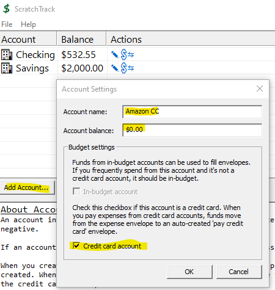 Next we'll create folders. Folders help organize expenses. Creating folders that align with monthly income events makes for a good workflow. In this example we're paid twice a month so we'll create folders for each paycheck. The folder's optional 'expense limit' tells ScratchTrack how much money typically flows into a folder each month. We'll set it to our usual paycheck amount. ScratchTrack will warn us if envelopes in this folder exceed the limit. 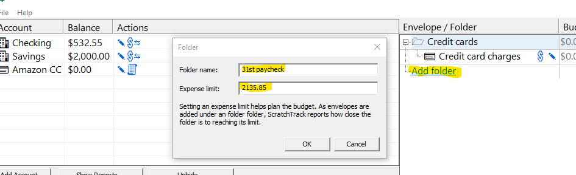 Now it's time to add envelopes. Add an envelope by clicking the asterisk next to the folder that will contain the new category. You can also right click the folder and select 'Add Envelope...'. You can optionally set default transactation settings for the envelope. In this example, the payee, the amount, and the account we pay from will be the same for every transaction, so we'll set all three values. 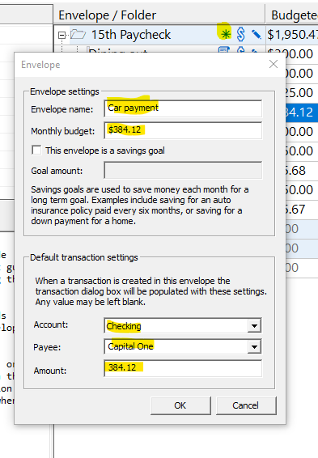 We've added our envelopes to our folders and we've got a problem. The budget for our envelopes exceeds the limit we set for the '31st paycheck' folder. ScratchTrack tells us in two spots: 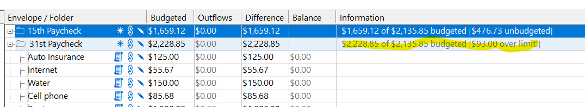 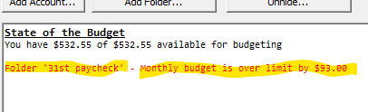 The '15th' folder is almost $500 below its expense limit so we'll move a few envelopes from the 31st folder to the 15th. We can do this via drag and drop or right click. 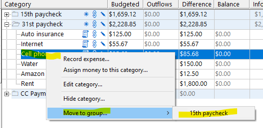 After moving cell, water, and internet to the 15th our budget is fairly balanced. Both folders have almost $200 of room for unexpected expenses. 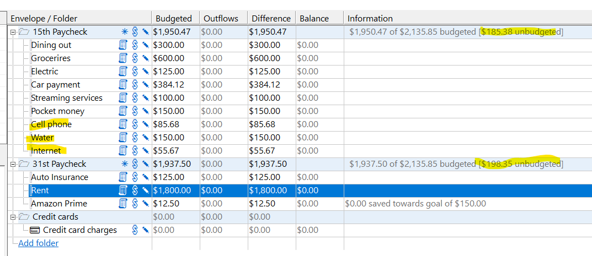 It's the 15th and we've been paid. We'll record the deposit by clicking the dollar sign icon next to the account that has received the money. We could've also right clicked the account and selected 'Deposit...'. 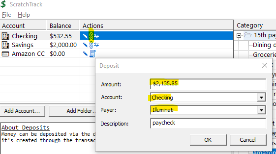 Here's our status after the deposit We've got money for funding our budget. 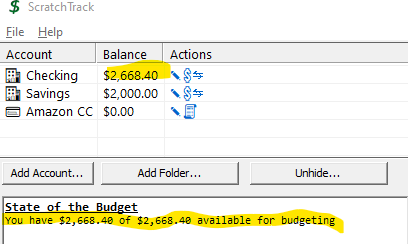 Let's fund our envelopes. You can fund all the categories in a folder at once by clicking the dollar sign icon next to the folder. You can also fund individual categories by clicking their dollar sign icon. In this example we'll fully fund all categories. 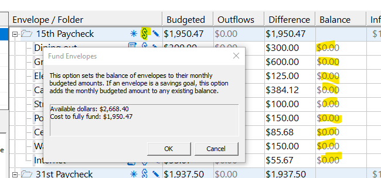 The balance of our checking accont is unchanged but the amount of money available for budgeting is decreased. This is because we've assigned money to the envelopes in our folder. Assigning money to envelopes doesn't actually move money. It just marks it for a specific expense category. 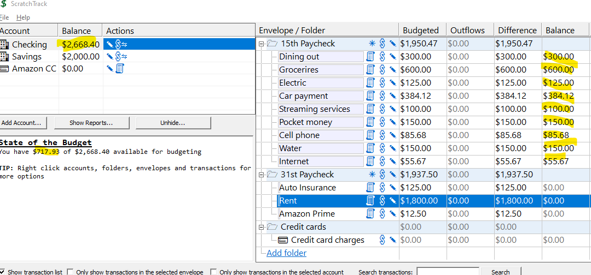 We're ready to pay some bills. Click the receipt icon next to an envelope (or right click the category and select 'Record expense...') to record an expense. In this example we're recording payment of our auto loan. Since we set default transacation values for this envelope, the dialog box is pre-filled and we just need to click OK to create the transaction. 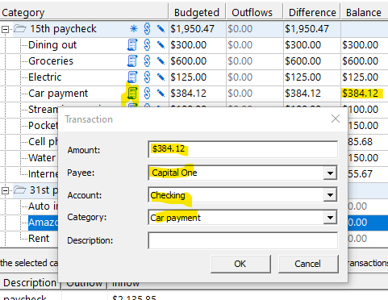 Here we can see that the expense is recorded. You can double click (or right click) a transaction to edit it. 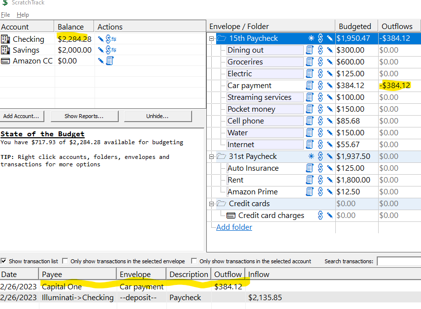 Our last topic is credit card transactions. The flow is the same as above, except when you pay for something with a credit card, funds move from the envelope to the 'Pay Credit Card' envelope. When the credit card bill is due, payment is tracked through the 'Pay Credit Card' category. In this example, we took grandma to Red Lobster and paid with our Amazon credit card. Note the various balances. 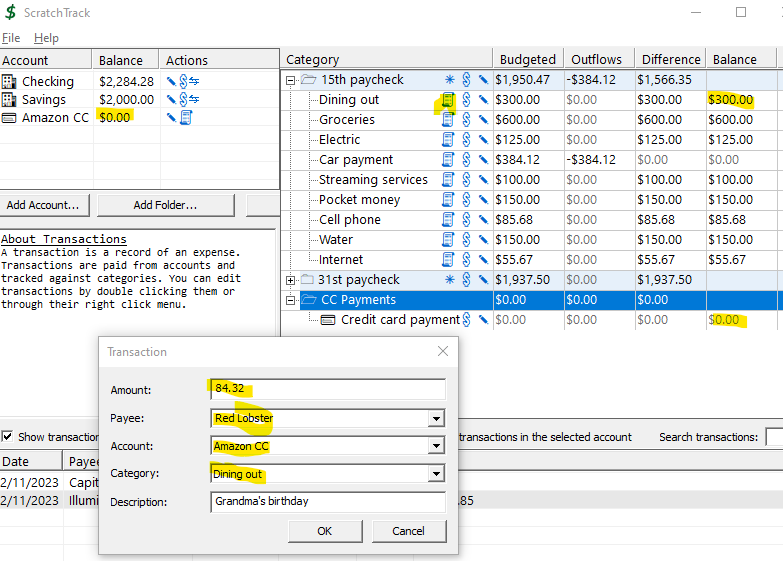 After recording this expense, the Amazon credit card balance is -$84.32. The 'Dining out' envelope balance is reduced by $84.32, and the 'Credit card payment' envelope has had $84.32 added to it. The intent of this work flow is to keep the $84.32 locked up since we know we'll need it to pay our credit card bill. 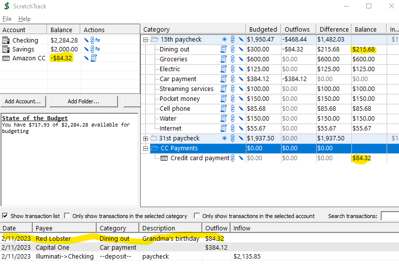 Let's pay the credit card and see what happens. Credit cards are paid via right click menu or by clicking the receipt icon next to the credit card account. Note the highlighted balances before we record the transaction. 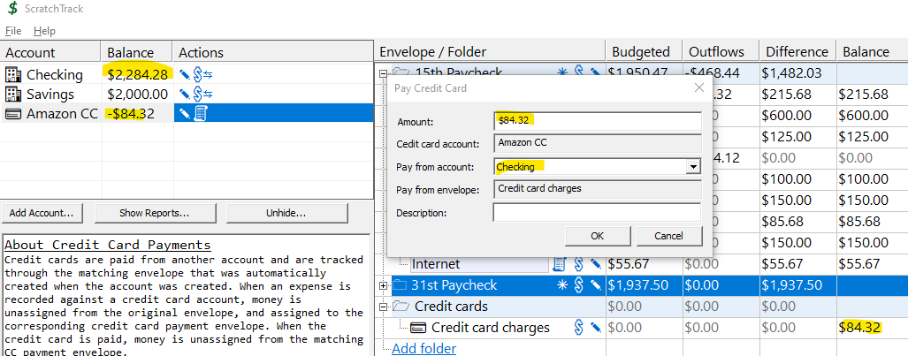 We paid the balance of $84.32 from our checking account. The checking balance has been reduced by that amount. The credit balance has had that amount applied and is now zero and the 'Credit card payment' category has had that amount deduceted and is also at zero. 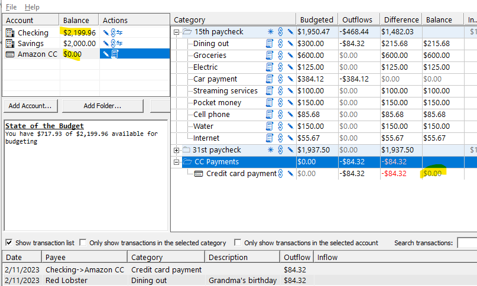 The last topic is the transaction list. This displays all transactions. You can search and filter as desired. Transactions can be edited through the right click context menu, or by double clicking. 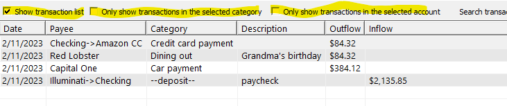 |